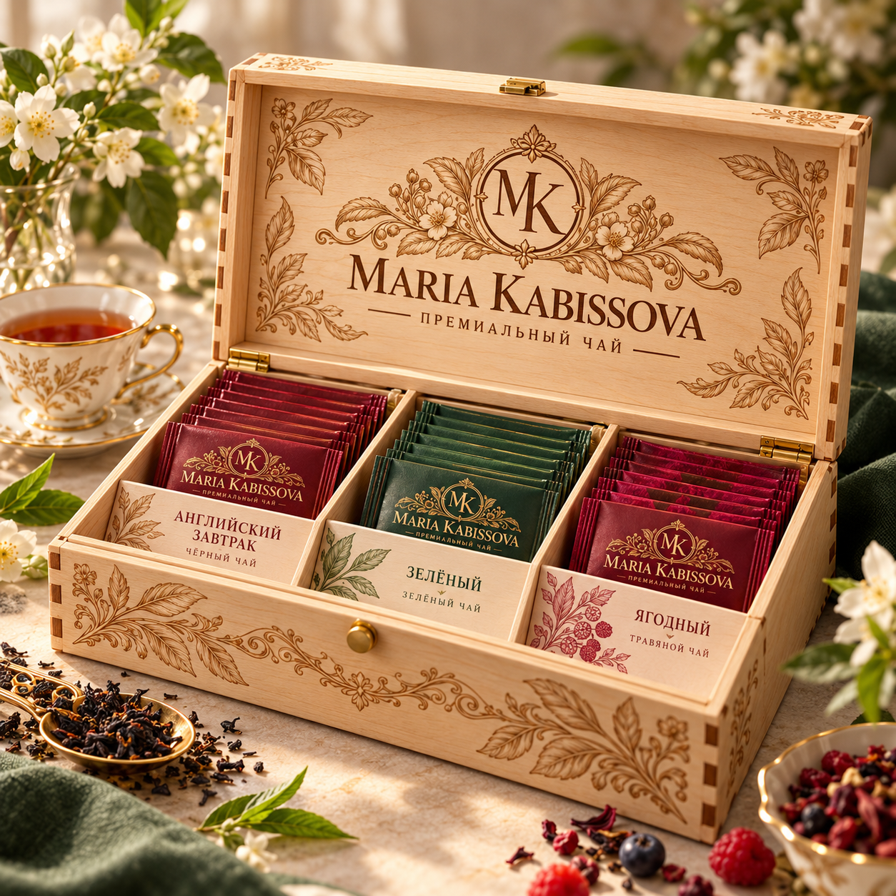
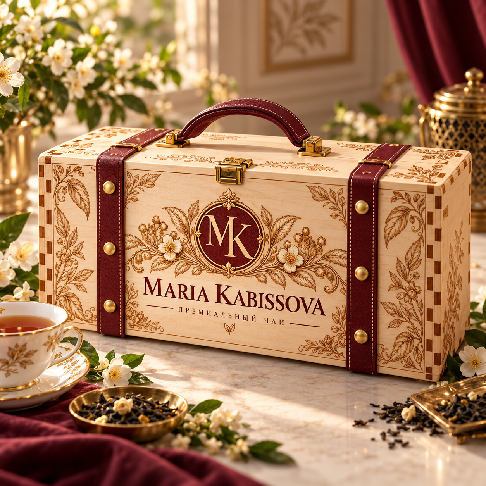

Классическая ботаника
Тёплая слоновая кость, иллюстрации чайных листьев и цветов, монограмма в изящном орнаменте.
Открыть концепцию →Фирменный стиль, дизайнерская упаковка и целостная презентация бренда Maria Kabissova.
Смотреть концепции →Разработано студией дизайна 3D-ARTPRINTДля согласования представлены три цельные концепции. Каждая предлагает собственный логотип, оформление тубусов, этикеток и подарочных изделий.
Тёплая слоновая кость, иллюстрации чайных листьев и цветов, монограмма в изящном орнаменте.
Открыть концепцию →Гербовый медальон, насыщенный бордовый, изумруд и выразительная золотая графика.
Открыть концепцию →Лаконичная монограмма с листом, крупные цветовые плоскости и современная типографика.
Открыть концепцию →Каждый вариант представлен отдельно: английская и русская версии, самостоятельная эмблема MK, концепция, палитра и примеры применения. Любое изображение увеличивается без обрезки.
Мягкая аристократичная классика: монограмма MK в окружении тонких ветвей, цветов и изящных линий.
Лёгкий ботанический орнамент, выразительная антиква и симметрия. Логотип передаёт натуральность, ручную работу и спокойную элегантность.
Бордовый, кремовый, античное золото и изумрудные детали.
Светлые этикетки на крафтовых тубусах, цветочные рамки на упаковке, тонкая гравировка на берёзовой фанере и подарочные открытки.
Нажмите на любую иллюстрацию, чтобы рассмотреть её целиком.
Торжественная монограмма MK в круглом гербовом медальоне — образ чайного дома с историей.
Более сложная декоративная рамка, золотые завитки и насыщенный центральный знак. Подчёркивает статусность и подарочную ценность.
Глубокий бордовый, тёмный изумруд, золото и слоновая кость.
Центральные медальоны на лицевых этикетках и крышках, выразительная гравировка на деревянном чемоданчике, оформление подарочных серий.
Нажмите на любую иллюстрацию, чтобы рассмотреть её целиком.
Лаконичная монограмма MK с плавным растительным акцентом — современный и легко узнаваемый знак.
Меньше орнамента, больше воздуха, крупный логотип и чистая типографика. Сдержанная эстетика без потери премиального характера.
Изумрудный и бордовый, тёплое золото и кремовый фон.
Минималистичные боковые наклейки, стикеры на металлические крышки, тиснение, лаконичная гравировка и оформление цифровой витрины.
Нажмите на любую иллюстрацию, чтобы рассмотреть её целиком.
Представленные изображения — оригинальные фрагменты согласованного презентационного листа. Это растровые варианты для сравнения; окончательные векторные оригинал-макеты подготавливаются отдельно после выбора направления.
На презентационных изображениях представлены стилистические концепции. Итоговые файлы будут адаптированы под реальные крафтовые тубусы с металлическими крышками, предоставленные заказчиком.
Глубокая классическая палитра.
Травяные и изумрудные оттенки.
Винные и ягодные акценты.

Два изделия на выбор: шкатулка с откидной крышкой и чемоданчик с ручкой. В презентации показываем оформление; производственные размеры и размещение саше уточняются отдельно.
Состав разработки →
Гравировка логотипа, декоративные ботанические узоры, варианты фурнитуры и внутреннего оформления под чайные саше.
Посмотрите, как оформление Maria Kabissova представлено в цифровой витрине. Демосайт откроется в отдельной вкладке — веб-КП останется открытым.
Открыть демосайт Maria Kabissova ↗После выбора направления единый стиль распространяется на все согласованные носители. Разработка трёх альтернатив не означает производство всех трёх одновременно. Финальная цена в этой презентации не указывается.
Три логотипа, три системы цвета и дизайна. Выбираем единое направление для дальнейшей разработки.
Боковые этикетки, металлические крышки, нижние наклейки, саше 40 × 40 и 50 × 50 мм, подарочные коробки.
Проверяем реальные размеры, читаемость, материалы и законодательно значимую информацию о продукции.
Подготовка согласованных файлов и пробных образцов; печать, производство и полный интернет-магазин — отдельные этапы.